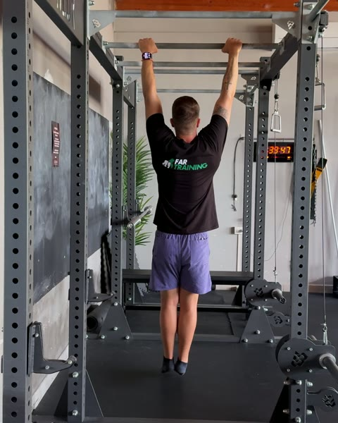
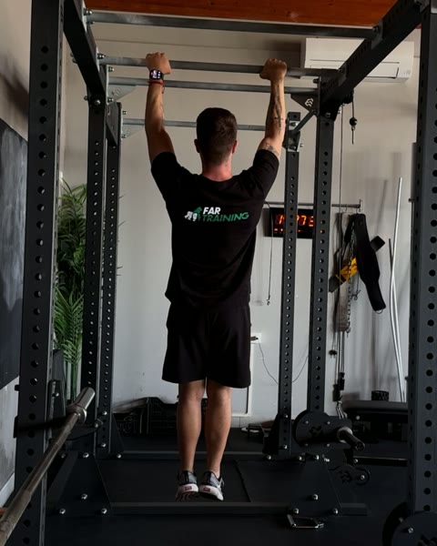
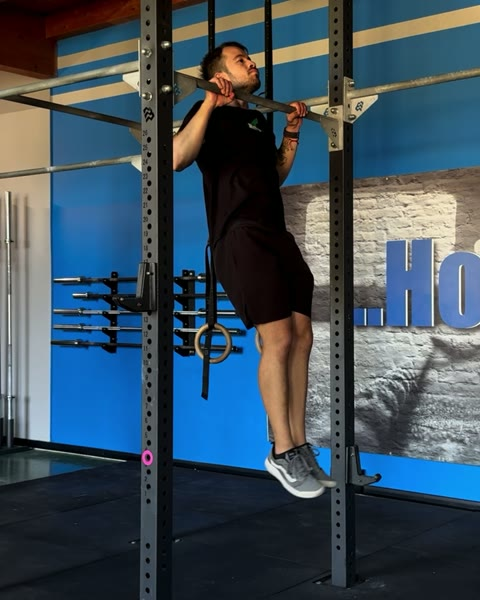
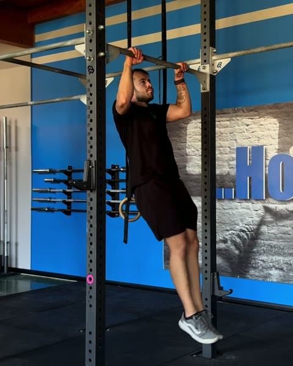
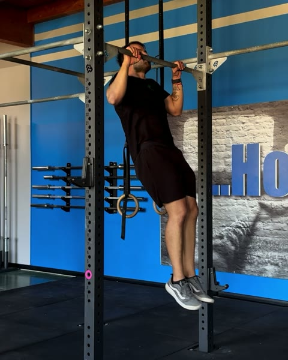
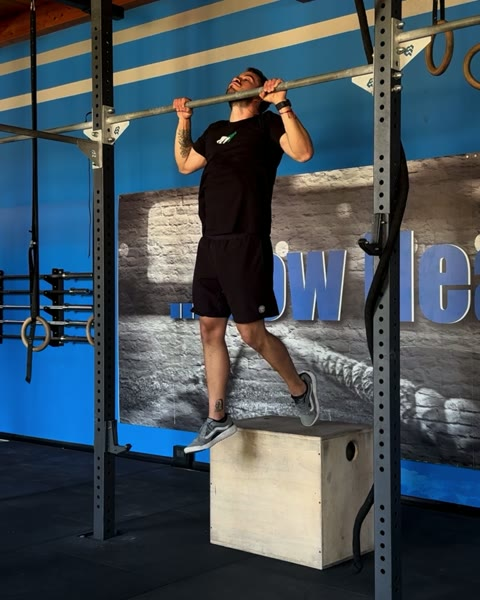

Guida gratuita
Strict Pull Up:
da dove parti
Nove test per trovare il tuo gradino. Una settimana per ogni gradino.
Filipe Ramos · coach di ginnastica · @coachfiliperamos
Scarica il PDFIl primo strict pull up non arriva provandolo tutti i giorni. Arriva quando hai già allenato i pezzi che lo compongono: la presa, il primo centimetro di tirata con le scapole, la discesa e il punto dove ti blocchi.
Si parte appesi alla sbarra. Poi negative, elastico e box ti fanno lavorare la tirata intera molto prima di averla, e le tenute in alto e a 90° insegnano al corpo il punto più duro invece di evitarlo. Ogni gradino è una settimana, e il test del settimo giorno alza l'asticella di una tacca, fino a tre serie pulite da tre. È anche il punto di partenza delle altre guide. Questa è la scala del programma Strict Pull Up dell'app FAR Training.
1. Il test: trova il tuo gradino
Fai i test in ordine, riposando quanto ti serve tra uno e l'altro. Ti fermi al primo che non passi: quello è il tuo gradino.
-

0Passive Dead Hang
10 secondi. Appeso alla sbarra, braccia tese. È il punto di partenza.
-

1Active Dead Hang
3 serie da 10". Spalle tirate giù e lontano dalle orecchie.
-

2Pull Up Negative
7 negative, 45" di recupero. Ognuna con almeno tre secondi di discesa, controllata dall'inizio alla fine.
-

3Jumping Pull Up · metà avambraccio
3 serie da 10. Sbarra all'altezza di metà avambraccio. Ripetizioni fatte bene.
-

4Jumping Pull Up · polso
3 serie da 10. Sbarra all'altezza del polso: il salto aiuta meno.
-

5Box Assisted Pull Up · da dietro, una gamba
3 serie da 5. Un piede sul box dietro di te, con pochissimo aiuto dal piede.
-
6
Strict Pull Up
3 serie da 1, 3' di recupero. Buona tecnica, senza slancio e senza kip.
-
 7
7Strict Pull Up
3 serie da 2, 3' di recupero. Buona tecnica, senza slancio e senza kip.
-
8
Strict Pull Up
3 serie da 3, 3' di recupero. Buona tecnica, senza slancio e senza kip.
Li passi tutti? Tre serie pulite da tre: la base per il kip c'è. Il passo dopo è la guida del Kipping Pull Up.
2. Cosa allenare sul tuo gradino
Ogni gradino è una settimana. Dal gradino 1 al 5: tre giorni di allenamento, uno di riposo, altri due, e il test il settimo giorno; al 6 si riposa anche il sesto. Dal 7 ci si allena un giorno sì e uno no. Qui trovi i primi tre allenamenti della settimana, con le dosi con cui si parte nell'app. Le tenute (RPE 8) durano finché senti uno sforzo di 8 su 10, poi scendi con controllo. Per il curl scegli un carico da 8-12 ripetizioni con due di riserva, e nell'ultima serie fai il massimo. Per il Band Assisted Pull Up usa l'elastico più sottile che ti lascia fare le ripetizioni di fila. AMRAP 30": più ripetizioni che puoi in 30 secondi. Lo Strict Pull Up 1 × 5 vuol dire accumulare 5 ripetizioni, anche singole, nel minor tempo possibile.
Gradino 1 Non passi il test 1
| Giorno 1 | Dose | Recupero |
|---|---|---|
| Passive Dead Hang | 3 × 10" | 20" |
| Scapular Pull Up | 3 × 5 | 30" |
| Pull Up Negative | 5 × 1 | 30" |
| Giorno 2 | Dose | Recupero |
| Scapular Ring Row | 2 × 10 | 30" |
| Ring Row | 5 × 5 | 1' |
| Barbell Biceps Curl | 2 × 8-12 | 1' |
| Giorno 3 | Dose | Recupero |
| Passive Dead Hang | 3 × 12" | 30" |
| Scapular Pull Up | 3 × 6 | 1' |
| Band Assisted Pull Up | 5 × 3 | 1' |
Gradino 2 Non passi il test 2
| Giorno 1 | Dose | Recupero |
|---|---|---|
| Active Dead Hang | 3 × 10" | 30" |
| Scapular Pull Up | 3 × 8 | 1' |
| Pull Up Negative | 6 × 1 | 45" |
| Giorno 2 | Dose | Recupero |
| Scapular Ring Row | 2 × 10 | 30" |
| Ring Row | 5 × 3 | 1' |
| Barbell Biceps Curl | 2 × 8-12 | 1' |
| Giorno 3 | Dose | Recupero |
| Passive Dead Hang | 3 × 20" | 30" |
| Scapular Pull Up | 3 × 9 | 1' |
| Band Assisted Pull Up | 5 × 4 | 1' |
Gradino 3 Non passi il test 3
| Giorno 1 | Dose | Recupero |
|---|---|---|
| Active Dead Hang | 3 × 15" | 30" |
| Scapular Pull Up | 3 × 10 | 55" |
| Jumping Pull Up + Negative | 5 × 1 | 30" |
| Giorno 2 | Dose | Recupero |
| Scapular Ring Row | 2 × 10 | 30" |
| Ring Row | 5 × 1 | 1' |
| Barbell Biceps Curl | 2 × 8-12 | 1' |
| Giorno 3 | Dose | Recupero |
| Active Dead Hang | 3 × 17" | 30" |
| Scapular Pull Up | 3 × 10 | 50" |
| Band Assisted Pull Up | 5 × 5 | 1' |
Gradino 4 Non passi il test 4
| Giorno 1 | Dose | Recupero |
|---|---|---|
| Scapular Pull Up | 2 × 10 | 30" |
| Pull Up Isometric Hold (Top) | 3 × 1 RPE 8 | 1' |
| Jumping Pull Up + Negative | 6 × 1 | 30" |
| Giorno 2 | Dose | Recupero |
| Ring Row | 5 × 4 | 1' |
| Pull Up Isometric Hold (90°) | 3 × 1 RPE 8 | 1' |
| Barbell Biceps Curl | 2 × 8-12 | 1' |
| Giorno 3 | Dose | Recupero |
| Scapular Pull Up | 2 × 10 | 30" |
| Chin-Up Isometric Hold (Top) | 3 × 1 RPE 8 | 1' |
| Band Assisted Pull Up | 5 × 3 | 1' |
Gradino 5 Non passi il test 5
| Giorno 1 | Dose | Recupero |
|---|---|---|
| Scapular Pull Up | 2 × 10 | 30" |
| Pull Up Isometric Hold (Top) | 3 × 1 RPE 8 | 1' |
| Jumping Pull Up + Negative | 7 × 1 | 30" |
| Giorno 2 | Dose | Recupero |
| Ring Row | 5 × 2 | 1' |
| Pull Up Isometric Hold (90°) | 3 × 1 RPE 8 | 1' |
| Barbell Biceps Curl | 2 × 8-12 | 1' |
| Giorno 3 | Dose | Recupero |
| Scapular Pull Up | 2 × 10 | 30" |
| Chin-Up Isometric Hold (Top) | 3 × 1 RPE 8 | 1' |
| Band Assisted Pull Up | 5 × 4 | 1' |
Gradino 6 Non passi il test 6
| Giorno 1 | Dose | Recupero |
|---|---|---|
| Scapular Pull Up | 2 × 10 | 30" |
| Pull Up Isometric Hold (Top) | 3 × 1 RPE 8 | 1' |
| Jumping Pull Up + Negative | 5 × 1 | 30" |
| Giorno 2 | Dose | Recupero |
| Ring Row | 3 × 10 | 1' |
| Pull Up Isometric Hold (90°) | 3 × 1 RPE 8 | 1' |
| Barbell Biceps Curl | 2 × 8-12 | 1' |
| Giorno 3 | Dose | Recupero |
| Scapular Pull Up | 2 × 10 | 30" |
| Chin-Up Isometric Hold (Top) | 3 × 1 RPE 8 | 1' |
| Band Assisted Pull Up | 5 × 5 | 1' |
Gradino 7 Non passi il test 7
| Giorno 1 | Dose | Recupero |
|---|---|---|
| Scapular Pull Up | 2 × 10 | 30" |
| Pull Up Negative | 2 × 5 | 0" |
| Band Assisted Pull Up | 3 × 30" AMRAP | 1' |
| Giorno 3 | Dose | Recupero |
| Scapular Pull Up | 2 × 10 | 30" |
| Pull Up Isometric Hold (90°) | 2 × 10" | 1' |
| Strict Pull Up | 1 × 5 | 0" |
| Giorno 5 | Dose | Recupero |
| Scapular Pull Up | 2 × 10 | 30" |
| Pull Up Isometric Hold (Top) | 2 × 10" | 1' |
| Strict Pull Up | 10 × 1 | 1' |
Gradino 8 Non passi il test 8
| Giorno 1 | Dose | Recupero |
|---|---|---|
| Scapular Pull Up | 2 × 10 | 30" |
| Pull Up Negative | 2 × 5 | 0" |
| Strict Pull Up | 3 × 30" AMRAP | 1' |
| Giorno 3 | Dose | Recupero |
| Scapular Pull Up | 2 × 10 | 30" |
| Pull Up Isometric Hold (90°) | 2 × 10" | 1' |
| Strict Pull Up | 1 × 5 | 0" |
| Giorno 5 | Dose | Recupero |
| Scapular Pull Up | 2 × 10 | 30" |
| Pull Up Isometric Hold (Top) | 2 × 10" | 1' |
| Strict Pull Up | 10 × 1 | 1' |
Il programma completo
Nell'app FAR Training ogni gradino è una settimana intera: tutti gli allenamenti, il video di ogni esercizio e il test alla fine. Dopo l'ottavo arrivano tre fasi Resistance per aumentare quante ne fai, e l'ultima si ripete, ciclo dopo ciclo. Il programma Strict Pull Up arriva sull'app: segui @fartraining per sapere quando esce.
Non sai se hai passato un test? Mandami il video in DM su @coachfiliperamos e ti dico da che gradino partire.
Il programma completo
Nell'app FAR Training ogni gradino è una settimana intera: tutti gli allenamenti, il video di ogni esercizio e il test alla fine. Dopo l'ottavo arrivano tre fasi Resistance per aumentare quante ne fai, e l'ultima si ripete, ciclo dopo ciclo. Il programma Strict Pull Up arriva sull'app: segui @fartraining per sapere quando esce.
Non sai se hai passato un test? Mandami il video in DM su @coachfiliperamos e ti dico da che gradino partire.
Apri @coachfiliperamos